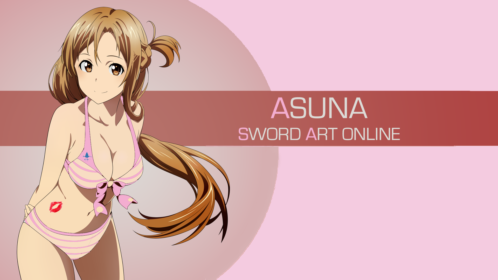
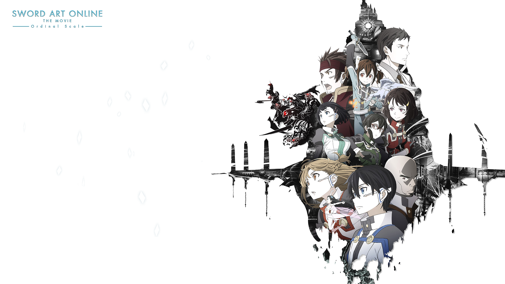
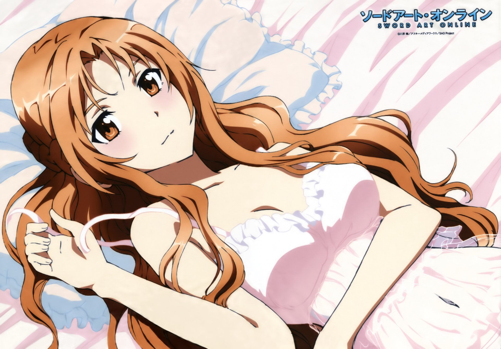

This is very few wallpaper that I photoshop a little bit. I added the snowfalke into the picture. So it has some mysterious and fantasy felling.

This is my favorite one among among the entire collection of SAO. I added the lip and the sao symbol to make it more fashionable.I also 'pink' couple of letters for on the right.

This is Yuna, the singer from the movie Ordinal Scale The soundtrack for the movie is aboslutely amazing too.
This is the collection of all the characters from Ordinary Scale. It is one of the collest wallaper I use.

I really like the hair color of Asuna in this wallaper and that's why I put this up here.

If you happened to like any one of them. Feel free to email me and I can send you the original version for free. Plus, I can photoshop the picture a little bit if you would like. If you find some cool wallpapers or you made some cool pictures that want to be put up online. Don't hetsistate to email me at any time!